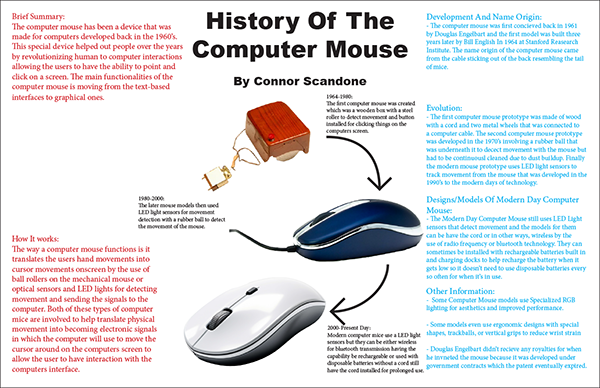

Infographic Project for AENG 110 class |
||
| Home Bookmark Project Digital Photography Project Infographic Project | ||
|

My Infographic project Click for enlarged image |
This is my Infographic project for my AENG110 class. As you can see here I made a poster about the history of the computer mouse and how it has evolved over the years, from the first model in 1964 to the most recent model in the modern days. |
Home Bookmark Project Digital Photography Project Infographic Project |
© 2025 Connor Scandone |